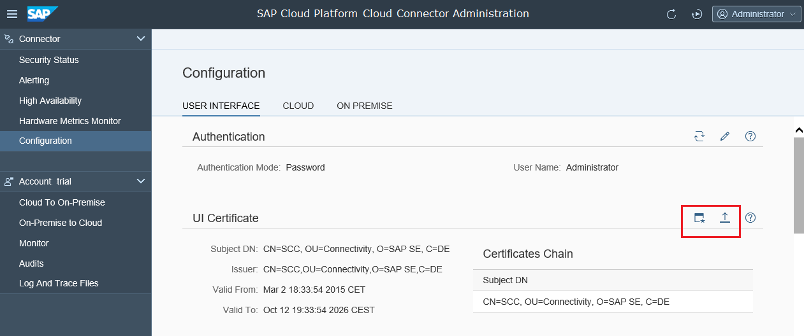

By default, the Cloud connector comes with a self-signed default certificate, which is used to encrypt the communication between the browser-based user interface and the Cloud connector itself. For security reasons, however, you should replace this certificate with your own one so that the browser accepts the certificate without security warnings.

The signing request needs to be provided to a Certificate Authority (CA) - either one within your company or another one you trust. The CA will sign the request and the returned response should be stored in a file.
The same operation is possible on the shadow instance in a high availability setup.